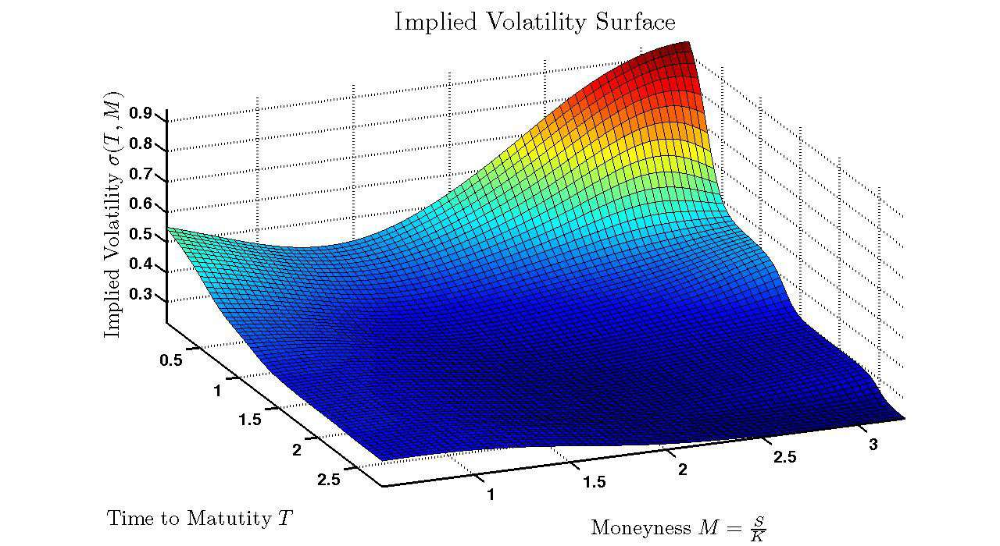

Project Objective & Overview
Driven by a passion for quantitative finance and a desire to test how system constraints impact market anomalies, I engineered an algorithmic options trading strategy designed to isolate high-probability, profitable calendar spreads during earnings cycles. The project objective was to eliminate low-quality trades and wide execution spreads by mathematically filtering market data.
The strategy screens for assets experiencing near-term volatility spikes (backwardation) by enforcing a Term Structure Slope filter (ts_slope_0_45 ≤ -0.00406) and overpriced options premium via an IV/RV ratio filter (iv30_rv30 ≥ 1.25). It further ensures high liquidity and tight bid-ask spreads by applying a 30-day average trading volume filter (≥ 1,500,000 shares). When conditions are met, the algorithm executes a calendar spread: selling a near-term contract to exploit rapid theta decay and buying a longer-term contract (>45 Days to Expiration).
ts_slope_0_45 = ((IV_at_45_days) - (IV_at_expiration)) / (45 - DTE)
Filter 1: ts_slope_0_45 ≤ -0.00406 (Backwardation Event)
Filter 2: iv30_rv30 ≥ 1.25 (Overpriced Implied vs Realized Volatility)
Filter 3: avg_volume ≥ 1,500,000 (Liquidity Guardrail)

Role, Learning, & Challenges
As the sole quantitative developer, I handled the entire lifecycle of this project—from theoretical structuring to historical backtesting. A major technical challenge was managing data normalization across disparate timelines, specifically ensuring that historical volatility accurately mapped against multi-expiration option chains. I overcame this by writing rigorous error-handling and data-cleaning scripts to account for missing gapped fills. Through this self-study, I mastered advanced programming concepts in data analysis, deep-dive volatility modeling, and risk management systems, demonstrating strong technical writing and design creativity in financial engineering.